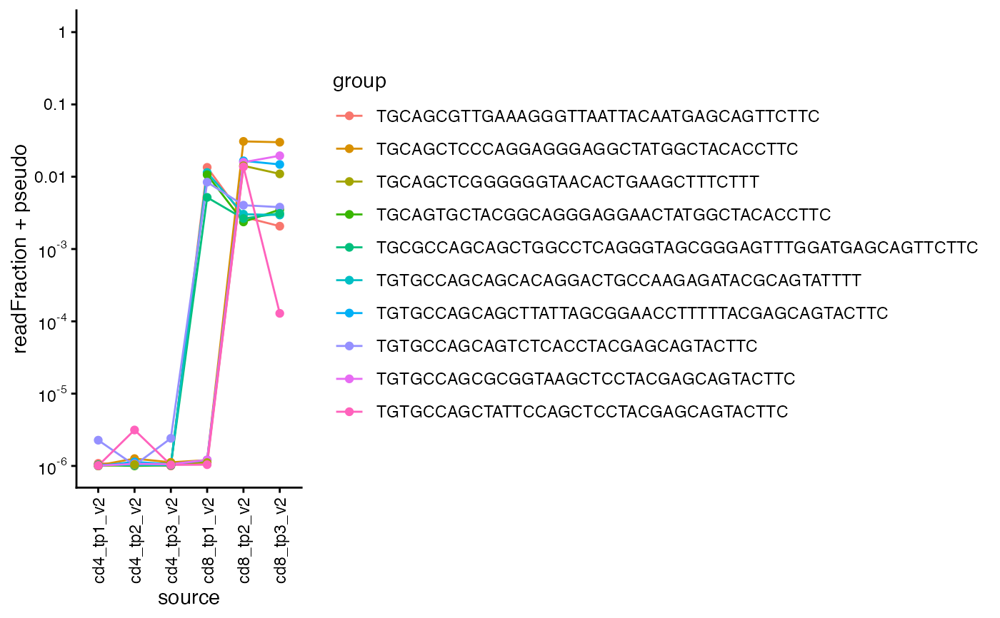

Line plot of clone read fraction across multiple samples
plot_clone_size_across_samples.Rd![[Experimental]](figures/lifecycle-experimental.svg) This function creates a line plot of clone read fraction for the specified clones
across multiple samples. The function can color the lines by groups of clones.
If
This function creates a line plot of clone read fraction for the specified clones
across multiple samples. The function can color the lines by groups of clones.
If sum_readFraction is TRUE, the read fraction for each group will be summed
and presented in one line.
Usage
plot_clone_size_across_samples(
data,
clones,
chain = c("beta", "alpha"),
pseudo = 1e-06,
group_vec = NULL,
sum_readFraction = TRUE,
samples = NULL,
return_data = FALSE,
label_zero = FALSE,
show_legend = TRUE,
log_scale = TRUE,
x_var = NULL
)Arguments
- data
a TIRTLseqData object
- clones
a list of nucleotide sequences of TCR clones
- chain
the TCR chain used (default is "beta")
- pseudo
the value of the pseudocount added to all read fractions (default is 10^-6)
- group_vec
(optional) a vector of "groups" for the clones
- sum_readFraction
if TRUE, plot the sum of read fractions of clones in each group. If FALSE, plot each clone with a separate line.
- samples
(optional) which samples to use in the plot (default is all samples)
- return_data
whether to return the data used for plotting (default is FALSE)
- label_zero
whether to label zero on the y-axis (default is FALSE)
- show_legend
whether to show the legend (default is TRUE)
- log_scale
(optional) if TRUE, use log-scale for the y-axis (default is FALSE)
- x_var
a column of metadata for grouping samples in the plot. The default is NULL, which considers each sample its own group.
See also
Other longitudinal:
plot_sample_vs_sample()
Examples
folder = system.file("extdata/SJTRC_TIRTL_seq_longitudinal",
package = "TIRTLtools")
sjtrc = load_tirtlseq(folder,
meta_columns = c("marker", "timepoint", "version"), sep = "_",
verbose = FALSE)
#> Loading files from: /Library/Frameworks/R.framework/Versions/4.5-arm64/Resources/library/TIRTLtools/extdata/SJTRC_TIRTL_seq_longitudinal...
#> Found 6 beta chain pseudo-bulk files.
#> Found 6 paired chain files.
#> Loaded 18 files from 6 samples.
#> 12.5 seconds
top_clones1 = sjtrc$data$cd8_tp1_v2$beta %>%
dplyr::arrange(desc(readFraction)) %>%
head(5) %>%
magrittr::extract2("targetSequences") %>% as.character()
top_clones2 = sjtrc$data$cd8_tp2_v2$beta %>%
dplyr::arrange(desc(readFraction)) %>%
head(5) %>%
magrittr::extract2("targetSequences") %>% as.character()
plot_clone_size_across_samples(sjtrc,
clones = c(top_clones1, top_clones2), chain = "beta")
